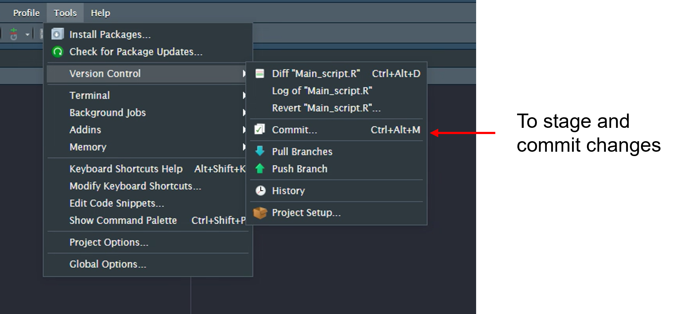
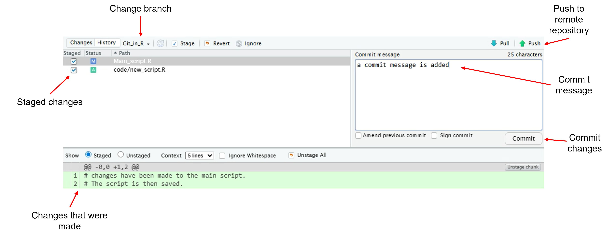

Using Git
What is Git
Git is an open source version control tool. It integrates with Github or Azure DevOps to allowing you to maintain clear versions of all coding projects.
Explaining the Jargon
All version control tools come with a set of jargon. in this section we aim to break down what each of those terms mean and how they apply to using git within github or Azure Devops.
All version control tools come with a set of jargon. In this section we aim to break down what each of those terms mean and how they apply to using git within Github or Azure DevOps.
Repository or Repo
This is the storage location of the project files along with the log of the complete history of changes made to the project files. For all projects you will encounter two main repositories.
Local - The local repository, sometimes referenced to as the Working directory refers to the project directory stored on the working machine. Such as within shared file storage, network drive or laptops C: drive. It is the directory in which you will be working and saving your files.
Remote - is hosted on platforms such as Github or Azure Devops. It is primarily used for backup and collaboration. It is usually what is known as a bare directory containing git files, history and metadata but not working files
Remote - The remote repository is hosted on platforms such as Github or Azure DevOps. It is primarily used for backup and collaboration. It is usually what is known as a bare directory containing git files, history and metadata but not working files
Git is used to facilitate communication between these two levels of repository. If the local repository already exists you can initialize the remote repository using the command line prompt:
git init
If the remote repository has already been initiated you can create a local copy by using the command prompt:
git clone
For more information on project structure refer to page:
Branches
Every new repository will be created with an origin branch know as main or master. This is branch should be used to store the final or stable, ready for use, version of the code.
Therefore it is code coding practice to develop code on a working branch. This is particularly good practice when working in teams as it allows every team member to work within their own branch and reduces risk of overwriting stable code and introducing bugs and errors to the main code line while they are developing. Once development is concluded the branch can be merged into the main stable codebase. Branches can also be used to test fixes for bugs.
To create a new branch locally and move onto that branch you can run the command:
Branches
Every new repository will be created with an origin branch know as main or master. This branch should be used to store the final or stable, ready for use, version of the code.
Therefore it is good coding practice to develop code on a working branch. This is particularly good practice when working in teams as it allows every team member to work within their own branch and reduces risk of overwriting stable code and introducing bugs and errors to the main code line while they are developing. Once development is concluded the branch can be merged into the main stable codebase. Branches can also be used to test fixes for bugs.
To create a new branch locally and move into that branch you can run the command:
git checkout -b <name>
You will then need to link your local branch to the remote branch using the command:
git push --set-upstream origin <name>
A new branch can also be created within your version control tool (Github, DevOps) and then
git checkout <name>
For more information on dealing with bug fixes and pull request, code merging within Devops:
- Guide to DevOps - Pull requests
Three Data states

There are three main states any file can exist within:
modified - files that have been add, removed, edited within the working directory.
staged - selected changes are temporarily recorded or indexed before they are committed to the git directory which stores the metadata and objects associated with the modifications that have been staged. To stage files you use the command:
git add
committed - committing takes files recorded in the staging area and stores a snapshot permanently within the git directory. Each commit is assigned a hash code that allows you to access the snapshot. Therefore if you want to roll-back to a particular snapshot you can access it via its hash code. Staged files can be committed as follows:
modified - Files that have been add, removed, edited within the working directory.
staged - Selected changes are temporarily recorded or indexed before they are committed to the git directory which stores the metadata and objects associated with the modifications that have been staged. To stage files you use the command:
git add
committed - Committing takes files recorded in the staging area and stores a snapshot permanently within the git directory. Each commit is assigned a hash code that allows you to access the snapshot. Therefore if you want to roll-back to a particular snapshot you can access it via its hash code. Staged files can be committed as follows:
`git commit -m “message”
A commit message is also added to all commit commands. This is to add context to the update within the git directory. A good commit message should be short and succinct but also give clear messaging about what you have changed. For example if you were fixing a bug, in a function called Check_file that was identified in pull request number 33 your commit message may look like:
git commit -m "!33: bug fix in Check_file - Solved"
The above commit message clearly states it is working on issue/pull request number 33 in which a bug was identified in the function check_file and that it has been tested and marked as solved ready for merging.
Remember to push
All of these are within the local repository. In order to back up the committed changes you have to push your changes to the remote repository. This can be done using the command:
git push
If you do not push your commits they will not be recorded in your remote repository and will not be backed up or be available to be accessed by collaborators.
Command line quick reference
#Initialize a remote repository from local folder
git init
#Clone a repository from remote
git clone
#To update local files to match remote repository
git pull
#To create a new local branch
git checkout -b <name>
#Move onto a branch
git checkout <name>
#Link a locale branch to the remote branch
git push --set-upstream origin <name>
#Link a local branch to the remote branch
git push --set-upstream origin name
#To stage all modified files
git add .
# To stage a single file
git add <file>
#To commit files to local repository
git commit -m "message"
#To push changes to remote repository
git push
#Check status of files
git statusGit within R studio
In order to use git within R studio you must have the directory set up as an R project. Therefore any cloned repository must contain a Rproj file.
You can use all the above command line within the terminal window of R Studio, However R Studio also offers a graphical interface that some may find preferable to use. To access open the Tools menu and access Version Control menu and Commit... you can also access with the keyboard short cut Ctrl+Alt+M

Within the commit screen you can easily change branch, overview any documents modified (M), added (A) or removed (R) and investigate those changes when compared to the remote branch. Changes can be staged by ticking the box within the stage column. A commit message can be added and changes committed to the local branch. Then changes can be pushed to the remote branch.

Further reading
For a more in depth discussion on Git and how it works : Pro Git book
For information in collaborating on projects within Azure Devops:-
Guide to DevOps - Pull requests